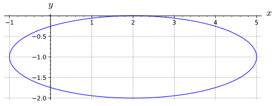
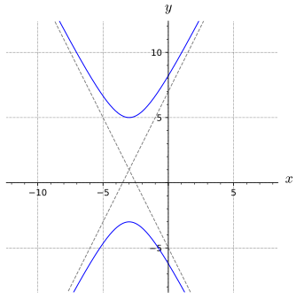

Section9.7Common Graphs in Two and Three Dimensions
Motivating Questions
What are some sample graphs in two and three dimensions that can be used throughout our study of multivariable ideas?
Preview Activity9.7.1.
For each of the following equations, you should:
Find all \(x\)-intercepts
Find all \(y\)-intercepts
Identify the shape of the graph (if you know it)
Identify all points where the graph will intersect with the vertical line \(x=2\)
Identify all points where the graph will intersect with the horizontal line \(y=-4\)
(a)
\(\frac{x^2}{9}+\frac{y^2}{25}=1\)
(b)
\(\frac{x}{3}+\frac{y}{5}=1\)
(c)
\(\frac{y^2}{4}-\frac{x^2}{1}=1\)
(d)
\(x=2y^2\)
(e)
\(\frac{y^2}{9}-\frac{x^2}{25}=0\)
We have seen how the distance formula leads to the equation of a sphere and how the idea of flat one and two dimensional graphs gave rise to lines and planes. In this section, we will introduce some other curves and surfaces that will be used throughout the rest of this text as examples. These objects will allow us to have graphs with a variety of geometric features while still being algebraically simple. The next activity will go over a couple of basic coordinate transformation ideas that will be helpful in generalizing our common graphs.
Activity9.7.2.
(a)
Suppose we wanted to have the point at \((4,-1)\) be the new center of a graph. We want to pick a new coordinate system, which we will call \((x^*,y^*)\text{,}\) to have its origin at the point with \((x,y)=(4,-1)\text{.}\) With this definition of our new \((x^*,y^*)\)-coordinates, give the \((x^*,y^*)\)-coordinates for each of the following points:
\(\displaystyle (x,y)=(4,-1)\)
\(\displaystyle (x,y)=(0,0)\)
\(\displaystyle (x,y)=(3,-2)\)
You may find it helpful to draw a set of coordinate axes for both \(x,y\) and \(x^*,y^*\text{.}\)
(b)
Generalize your work for part9.7.2.a and write \(x^*\) and \(y^*\) in terms of \(x\text{,}\)\(y\text{,}\) and the coordinates of new center \((4,-1)\text{.}\)
Using the same coordinate systems as in part9.7.2.a, give the \((x,y)\)-coordinates of the following points:
\(\displaystyle (x^*,y^*)=(0,0)\)
\(\displaystyle (x^*,y^*)=(4,-1)\)
\(\displaystyle (x^*,y^*)=(-5,7)\)
(d)
Generalize your work for part9.7.2.c and write \(x\) and \(y\) in terms of \(x\text{,}\)\(y\text{,}\) and the coordinates of new center \((4,-1)\text{.}\)
Draw a plot that includes the axes for both coordinate systems and label each point in the tasks above. Write a couple of sentences to explain your conversion equations in part9.7.2.b and part9.7.2.d. Remember that points should not change location but have different \((x,y)\) and \((x^*,y^*)\) coordinates.
(f)
We want to stretch the \((x,y)\)-coordinate system horizontally by a factor of two (without changing where the origin or the vertical coordinates). We will call this new coordinate system \((x',y')\text{.}\) If we look at the point with \((x,y)\) coordinates \((4,2)\text{,}\) then the \((x',y')\) coordinates of that same point are \((2,2)\text{.}\) Give the \((x',y')\) coordinates of the following points:
\(\displaystyle (x,y)=(0,5)\)
\(\displaystyle (x,y)=(-3,1)\)
(g)
Give the \((x,y)\) coordinates of the following points:
\(\displaystyle (x',y')=(1,1)\)
\(\displaystyle (x',y')=(\sqrt{5},-\pi)\)
(h)
Draw a plot that includes the axes for both coordinate systems (\((x,y)\) and \((x',y')\)) and label each point in the tasks above. Use your plot and the work from previous tasks to write \(x'\) and \(y'\) in terms of \(x\) and \(y\text{.}\)
You may have seen the ideas of coordinate transformation that were central to Activity9.7.2, but hopefully you see precisely where the algebraic transformations come from and how they correspond to simple geometric transformations. For our basic shapes in 2D, we will give a very brief definition for the shape, but the focus of this presentation will be about applying transformations to a basic shape in order to generalize the possible usage of these shapes.
A circle is the set of points that are a fixed distance (called the radius) away from a specific point (called the center). Most often, circles are introduced with the center at the origin and the radius given by a constant \(R\text{.}\) This means that a point \((x,y)\) that is on the circle will satisfy
, which is often called the standard form of the circle. The standard form is convenient to use because the information needed to graph the circle can be read from this form without needing more algebra. For instance, the circle given by
would have center \((2,-3)\) and radius \(\sqrt{6}\text{.}\) Notice that the transformation equations from Activity9.7.2 show up in this example as we move a circle from being centered at the origin(\(x^2+y^2=R^2\)) to a point \((h,k)\) (\((x-h)^2+(y-k)^2=R^2\)).
Definition9.7.1.
An ellipse is the set of all points such that the sum of the distances from the point \((x,y)\) to a pair of distinct points (called foci) is a fixed constant.
Figure9.7.2.A plot of an ellipse with foci in green
In the interact above, you can see how as you move around the ellipse, the sum of the lengths of the blue and red segments remains constant, as shown compared to the green segment (which is a fixed length).
While the definition of the ellipse given above has some great applications in engineering, orbital mechanics, and optics, we will focus on the ellipse as a transformation of a circle. While this is not obvious and the details take a little while to prove, any ellipse in the plane can be obtained by transforming a circle (through translation, horizontal/vertical coordinate stretches that are not the same as each other, and rotations of the coordinate systems).
Activity9.7.3.
(a)
What transformation is done to convert between the circle given by \(x^2+y^2=1\) and the graph of \(\frac{x^2}{4}+y^2=1\text{?}\) You should be specific about how the graph of \(\frac{x^2}{4}+y^2=1\) is different than the graph of \(x^2+y^2=1\text{.}\)
Hint.
Look at the \(x\)-intercepts of each equation
(b)
What transformations are done to convert between the circle given by \(x^2+y^2=1\) and the graph of \(\frac{x^2}{4}+\frac{y^2}{9}=1\text{?}\) You should be specific about how the graph of \(\frac{x^2}{4}+\frac{y^2}{9}=1\) is different than the graph of \(x^2+y^2=1\) and specify if the transformations need to be done in a particular order.
(c)
What transformations are done to convert between the circle given by \(x^2+y^2=1\) and the graph of \(\frac{(x+2)^2}{4}+\frac{(y-3)^2}{9}=1\text{?}\) You should be specific about how the graph of \(\frac{(x+2)^2}{4}+\frac{(y-3)^2}{9}=1\) is different than the graph of \(x^2+y^2=1\) and specify if the transformations need to be done in a particular order.
(d)
Draw a plot of \(\frac{(x+2)^2}{4}+\frac{(y-3)^2}{9}=1\) and label the center of your plot and the points that demonstrate how far the ellipse is stretched in the vertical and horizontal directions.
(e)
The graph of the equation \(9x^2+16y^2=400\) is an ellipse. Convert this equation to the form \(\frac{(x-h)^2}{a^2}+\frac{(y-k)^2}{b^2}=1\) and use the idea of transformations from above to graph this ellipse and label all extreme points on your plot.
(f)
The graph of the equation \(4x^2+y^2+24x-2y+21=0\) is an ellipse. Convert this equation to the form \(\frac{(x-h)^2}{a^2}+\frac{(y-k)^2}{b^2}=1\) and use the idea of transformations from above to graph this ellipse and label all extreme points on your plot.
(g)
Give the equation of the ellipse shown in Figure9.7.3

Figure9.7.3.A plot of an ellipse
Definition9.7.4.
A hyperbola is the set of all points such that the difference of the distances from the point \((x,y)\) to a pair of distinct points (called foci) is a fixed constant.
Figure9.7.5.A plot of an hyperbola with foci in green
In the interact above, you can see how as you move around the hyperbola, the difference of the lengths of the blue and red segments remains constant (shown in green). Additionally, you can see that a hyperbola has asymptotic behavior in that as you approach the edges of the plot, the hyperbola will get very close to the asymptote lines (shown with a dashed line).
Activity9.7.4.
(a)
Make a plot of the hyperbola given by \(x^2-y^2=1\text{.}\) You should draw and label the asymptotes (\(y=\pm x\)) and the vertices (the points on the hyperbola that are closest to the center).
(b)
What transformation is done to convert between the hyperbolas given by \(x^2-y^2=1\) and the graph of \(\frac{x^2}{4}-y^2=1\text{?}\) You should be specific about how the graph of \(\frac{x^2}{4}-y^2=1\) is different than the graph of \(x^2-y^2=1\text{.}\)
Hint.
Look at the \(x\)-intercepts of each equation
(c)
What transformation is done to convert between the hyperbolas given by \(x^2-y^2=1\) and the graph of \(y^2-x^2=1\text{?}\) You should be specific about how the graph of \(y^2-x^2=1\) is different than the graph of \(x^2-y^2=1\text{.}\)
Hint.
Look at both intercepts of each equation
(d)
What transformations are done to convert between \(x^2-y^2=1\) and the graph of \(\frac{x^2}{4}-\frac{y^2}{9}=1\text{?}\) You should be specific about how the graph of \(\frac{x^2}{4}-\frac{y^2}{9}=1\) is different than the graph of \(x^2-y^2=1\) and specify if the transformations need to be done in a particular order.
(e)
Draw a plot of \(\frac{(x+2)^2}{4}-\frac{(y-3)^2}{9}=1\) and label the center, the vertices of the hyperbola, and the asymptote lines. You will need to apply the transformations from the previous part to the asymptotes of the base hyperbola (given by \(y = \pm x\)) in order to get the equations of the transformed asymptotes.
(f)
The graph of the equation \(9x^2-16y^2=400\) is an hyperbola. Convert this equation to the form \(\frac{(x-h)^2}{a^2}-\frac{(y-k)^2}{b^2}=1\) and use the idea of transformations from above to graph this hyperbola and label the center, the vertices of the hyperbola, and the asymptote lines.
(g)
The graph of the equation \(4x^2+y^2+24x-2y+21=0\) is an ellipse. Convert this equation to the form \(\frac{(x-h)^2}{a^2}+\frac{(y-k)^2}{b^2}=1\) and use the idea of transformations from above to graph this ellipse and label all extreme points on your plot.
(h)
Give the equation of the hyperbola shown in Figure9.7.6

Figure9.7.6.A plot of an ellipse
Definition9.7.7.
A parabola is the set of all points that are the same distance from a point (called the focus) and a line (called the directrix).
Figure9.7.8.A plot of an parabola with the focus in green and the directrix shown as a dashed line
In the interact above, you can see how as you move around the parabola, the lengths of the blue and red segments remains the same as each other. The point that is half way between the focus and the directrix is referred to as the center and the vertex of the parabola.
Activity9.7.5.
(a)
Make a plot of the hyperbola given by \(x=y^2\text{.}\) You should draw and label the vertex and four other points on the hyperbola.
(b)
Draw a plot of the graph for \(2x=y^2\) and label the vertex and four other points on the hyperbola. What transformation is done to convert between the parabola given by \(x=y^2\) and the graph of \(2x=y^2\text{?}\) You should be specific about how the graph of \(2x=y^2\) is different than the graph of \(x=y^2\text{.}\)
(c)
Draw a plot of the graph for \(y=x^2\) and label the vertex and four other points on the hyperbola. What transformation is done to convert between the hyperbolas given by \(y=x^2\) and the graph of \(x=y^2\text{?}\) You should be specific about how the graph of \(x=y^2\) is different than the graph of \(y=x^2\text{.}\)
(d)
What transformations are done to convert between \(x=y^2\) and the graph of \(\frac{x-1}{2}=\left(\frac{(y+2)}{3}\right)^2\text{?}\) You should be specific about how the graph of \(\frac{x-1}{2}=\left(\frac{(y+2)}{3}\right)^2\) is different than the graph of \(x=y^2\) and specify if the transformations need to be done in a particular order.
(e)
Draw a plot of \(\frac{x-1}{2}=\left(\frac{(y+2)}{3}\right)^2\) and label the vertex and four other points on the hyperbola.
(f)
The graph of the equation \(x^2-8x-8y+8=0\) is an parabola. Convert this equation to the form \(\left(\frac{(x-h)}{a}\right)^2=\frac{(y-k)}{b}\) and use the idea of transformations from above to graph this hyperbola and label the center, the vertices of the hyperbola, and the asymptote lines.
(g)
Give the equation of the parabola shown in Figure9.7.9
Figure9.7.9.A plot of an parabola
Subsection9.7.2Cylinder Surfaces
Our previous examples in this section show how to create a variety of interesting curves on the \(xy\)-plane. What happens if we consider these same equations in three dimensions? Lets look at an example like \((x-1)=\frac{(y+2)^2}{2}\text{.}\) If we consider the graph of \((x-1)=\frac{(y+2)^2}{2}\) in 2D, then we get a parabola centered at \((1,-2)\text{.}\)
Figure9.7.10.A plot of \((x-1)=\frac{(y+2)^2}{2}\) in the \(xy\)-plane with five points highlighted
If we want to look at the graph of \((x-1)=\frac{(y+2)^2}{2}\) in 3D, we are considering all of the \((x,y,z)\) points that will satisfy this equation. So if we pick \(x\) and \(y\) values that satisfy \((x-1)=\frac{(y+2)^2}{2}\text{,}\) then ANY choice of \(z\) will satisfy the given question. So for the each of the highlighted points on Figure9.7.10, we can extend the graph of \((x-1)=\frac{(y+2)^2}{2}\) parallel to the \(z\)-axis. Figure9.7.11 shows how the points on the parabola (in black) can be extended to include any \(z\) coordinate.
Figure9.7.11.A plot of \((x-1)=\frac{(y+2)^2}{2}\) generating curve and several rulings
Extending all points from the circle \((x-1)=\frac{(y+2)^2}{2}\) in the \(xy\)-plane parallel to the \(z\)-axis will give a surface. This kind of surface is called a cylinder surface, the two dimensional curve you use to make the surface is called the generating curve, and the lines that extend in the direction of the missing variable are called rulings. In Figure9.7.12, the surface is plotted in blue, the generating curve in black, and the rulings in green. This surface is called a parabolic cylinder surface because the generating curve is a parabola.
Figure9.7.12.A plot of the cylinder surface \((x-1)=\frac{(y+2)^2}{2}\) with generating curve and several rulings
Activity9.7.6.
(a)
Draw the graph of \(2x-y+1=0\) on the \(xy\)-plane.
(b)
Draw the graph of \(2x-y+1=0\) in \(xyz\)-space. This is called a linear cylinder surface.
(c)
Draw the graph of \((x-1)^2+(y+2)^2=4\) in \(xyz\)-space. This is called a right-circular cylinder surface.
(d)
Draw the graph of \(\frac{x^2}{9}+\frac{z^2}{4}=1\) in \(xyz\)-space. This is called an elliptic cylinder surface.
Subsection9.7.3Quadric Surfaces
In this section, we will look at a set of surfaces with algebraic equations that are quadratic in \(x\text{,}\)\(y\text{,}\) and \(z\text{.}\) This will give us a category of example surfaces that are algebraically simple but exhibit a variety of interesting characteristics.
Activity9.7.7.
For this activity, we will be looking at a variety properties that will help us draw a graph of the surface described by \(\frac{x^2}{4}+\frac{y^2}{9}-\frac{z^2}{1}=1\text{.}\)
(a)
Find all \(x\)-, \(y\)-, and \(z\)-intercepts of \(\frac{x^2}{4}+\frac{y^2}{9}-\frac{z^2}{1}=1\text{.}\)
Hint.
The \(x\)-intercepts are where \(y=0\) and \(z=0\text{.}\)
(b)
Find an equation for the curve given by the intersection of \(\frac{x^2}{4}+\frac{y^2}{9}-\frac{z^2}{1}=1\) with the \(xy\)-plane. Draw a plot of this intersection on the \(xy\)-plane (this should be a 2D plot).
(c)
Find an equation for the curve given by the intersection of \(\frac{x^2}{4}+\frac{y^2}{9}-\frac{z^2}{1}=1\) with the \(yz\)-plane. Draw a plot of your intersection on the \(yz\)-plane (this should be a 2D plot).
(d)
Find an equation for the curve given by the intersection of \(\frac{x^2}{4}+\frac{y^2}{9}-\frac{z^2}{1}=1\) with the \(xz\)-plane. Draw a plot of your intersection on the \(xz\)-plane (this should be a 2D plot).
(e)
Find equations for the curve given by the intersection of \(\frac{x^2}{4}+\frac{y^2}{9}-\frac{z^2}{1}=1\) with the each of the following fundamental planes. You should state the shape and any other characteristics (like center or direction) for each of these intersections.
\(\displaystyle z=1\)
\(\displaystyle z=-2\)
\(\displaystyle z=\sqrt{3}\)
\(\displaystyle x=3\)
\(\displaystyle x=-1\)
(f)
Draw each of these intersections on the proper fundamental planes in 3D.
(g)
Which of the following surface plots will correspond to \(\frac{x^2}{4}+\frac{y^2}{9}-\frac{z^2}{1}=1\text{?}\) You can determine this by comparing the features on your previous part to these options.
Figure9.7.14.A plot surfaces to select from
Activity9.7.8.
(a)
Find equations for the curve given by the intersection of \(\frac{x^2}{4}-\frac{y^2}{9}-\frac{z^2}{1}=1\) with the each of the following fundamental planes. You should state the shape and any other characteristics (like center or direction) for each of these intersections.
\(\displaystyle z=0\)
\(\displaystyle y=0\)
\(\displaystyle x=0\)
\(\displaystyle z=1\)
\(\displaystyle y=-2\)
\(\displaystyle z=\sqrt{3}\)
\(\displaystyle x=3\)
\(\displaystyle x=-1\)
(b)
Which of the following surface plots will correspond to \(\frac{x^2}{4}-\frac{y^2}{9}-\frac{z^2}{1}=1\text{?}\) You can determine this by comparing the features on your previous part to these options.
Figure9.7.15.A plot surfaces to select from
(c)
Find equations for the curve given by the intersection of \(\frac{x^2}{4}+\frac{y^2}{9}+\frac{z^2}{1}=1\) with the each of the following fundamental planes. You should state the shape and any other characteristics (like center or direction) for each of these intersections.
\(\displaystyle z=0\)
\(\displaystyle y=0\)
\(\displaystyle x=0\)
\(\displaystyle z=1\)
\(\displaystyle z=-2\)
\(\displaystyle y=\sqrt{3}\)
\(\displaystyle x=3\)
\(\displaystyle x=-1\)
(d)
Which of the following surface plots will correspond to \(\frac{x^2}{4}+\frac{y^2}{9}+\frac{z^2}{1}=1\text{?}\) You can determine this by comparing the features on your previous part to these options.
Figure9.7.16.A plot surfaces to select from
The surfaces given by \(\frac{x^2}{4}+\frac{y^2}{9}+\frac{z^2}{1}=1\text{,}\)\(\frac{x^2}{4}+\frac{y^2}{9}-\frac{z^2}{1}=1\text{,}\) and \(\frac{x^2}{4}-\frac{y^2}{9}-\frac{z^2}{1}=1\) are examples of quadric surfaces. Quadric surfaces are the surfaces generated by polynomials that are quadratic in the three coordinate variables \(x\text{,}\)\(y\text{,}\) and \(z\text{.}\) There are six main shapes of quadric surfaces; Below are plots of each of the main shapes with the algebraic form used to describe each shape. Note that all of these examples are oriented along the \(z-axis\) and centered at the origin, but in our later work, we will often consider versions of these oriented along other coordinate directions with the center not at the origin.
Figure9.7.17.Ellipsoid: \(\frac{x^2}{a^2}+\frac{y^2}{b^2}+\frac{z^2}{c^2}=1\)Figure9.7.18.Hyperboloid of 1-Sheet: \(\frac{x^2}{a^2}+\frac{y^2}{b^2}-\frac{z^2}{c^2}=1\)Figure9.7.19.Hyperboloid of 2-Sheet: \(-\frac{x^2}{a^2}-\frac{y^2}{b^2}+\frac{z^2}{c^2}=1\)Figure9.7.20.Elliptic Paraboloid: \(\frac{x^2}{a^2}+\frac{y^2}{b^2}=z\)Figure9.7.21.Hyperbolic Paraboloid (Saddle): \(\frac{x^2}{a^2}-\frac{y^2}{b^2}=z\)Figure9.7.22.Cone: \(\frac{x^2}{a^2}-\frac{y^2}{b^2}=\frac{z^2}{c^2}\)
In Chapter11, we will talk about surfaces where one coordinate can be expressed as a function of the others. This is an extension of the idea that graphs that pass the vertical line test can be expressed with \(y\) as a function of \(x\text{.}\) For instance, in the plot of the saddle surface Figure9.7.21, any vertical line (parallel to the \(z\)-axis) will intersect the saddle surface at only one place, thus the saddle surface can be expressed with \(z\) as a function of \(x\) and \(y\text{.}\) This is not surprising since the saddle surface is given by \(\frac{x^2}{a^2}-\frac{y^2}{b^2}=z\text{.}\)
Compare this to the graph of a Hyperboloid of 1-Sheet in Figure9.7.18, where a line that is parallel to the \(z\)-axis will intersect our surface at two places. Lines parallel to the \(x\)- or \(y\)-axes will also intersect the hyperboloid of one sheet in more than one place. This means that you cannot express the graph of a hyperboloid of one sheet with none of the coordinates as a function of the other two. Algebraically, this corresponds to there being more than one solution when you try to solve the equation \(\frac{x^2}{a^2}+\frac{y^2}{b^2}-\frac{z^2}{c^2}=1\) for one variable. In particular, the multiple solutions come from needing to consider the positive and negative square roots. We will return to this idea in Chapter11.
Subsection9.7.4Summary
Translated Conic Sections have the following forms:
Ellipse: \(\frac{(x-h)^2}{a^2}+\frac{(y-k)^2}{b^2}=1\) with center \((h,k)\text{,}\) vertices \((h\pm a,k)\) and covertices \((h,k\pm b)\)
Hyperbola: \(\frac{(x-h)^2}{a^2}-\frac{(y-k)^2}{b^2}=1\) with center \((h,k)\text{,}\) vertices \((h\pm a,k)\text{,}\) and asymptotes \((y-k)=\frac{b}{a}(x-h)\)
Parabola: \((x-h)=A(y-k)^2\) with vertex/center \((h,k)\)
Other versions of these forms that are oriented vertically will have the roles of \(x\) and \(y\) switched.
Cylinder surfaces are described algebraically by an equation involving only two coordinate variables. Geometrically, a cylinder surface is generated by a curve/graph in the coordinate plane involving the two coordinate variables in the equation and stretching this generating curve parallel to the missing coordinate variables axis.
Quadric surfaces are a category of surfaces created by quadratic equations in \(x\text{,}\)\(y\text{,}\) and \(z\text{.}\) Quadric surfaces have six typical shapes: ellipsoid, hyperboloid of one sheet, hyperboloid of two sheets, elliptic paraboloid, hyperbolic paraboloid (saddle surface), and cone. The same coordinate transformations that generalize conic sections can be applied to quadric surfaces.
Exercises9.7.5Exercises
1.
(a) Describe the set of points whose distance from the y-axis equals the distance from the xz-plane.
A cylinder opening along the y-axis
A cylinder opening along the x-axis
A cone opening along the x-axis
A cone opening along the y-axis
A cylinder opening along the z-axis
A cone opening along the z-axis
(b) Find the equation for the set of points whose distance from the y-axis equals the distance from the xz-plane.
\(\displaystyle x^2 + z^2 = r^2\)
\(\displaystyle y^2 + z^2 = r^2\)
\(\displaystyle z^2 = x^2 + y^2\)
\(\displaystyle x^2 + y^2 = r^2\)
\(\displaystyle y^2 = x^2 + z^2\)
\(\displaystyle x^2 = y^2 + z^2\)
2.
For each surface, decide whether it could be a bowl, a plate, or neither. Consider a plate to be any fairly flat surface and a bowl to be anything that could hold water, assuming the positive z-axis is up.
\(\displaystyle x + y + z = 1\)
\(\displaystyle z = 1 - x^2 - y^2\)
\(\displaystyle z = - \sqrt{ 4 - x^2 - y^2 }\)
\(\displaystyle z = 3\)
\(\displaystyle z = x^2 + y^2\)
Subsection9.7.6Notes to Instructors and Dependencies
This section includes a lot of basic transformation ideas that students may have a range of experience with. We included these activities as a way to make sure that students have some exposure and they get to practice simple algebraic procedures that will be used with more complexity later in the text. A more thorough approach to the conic sections can be found at (insert link to IBL materials here).